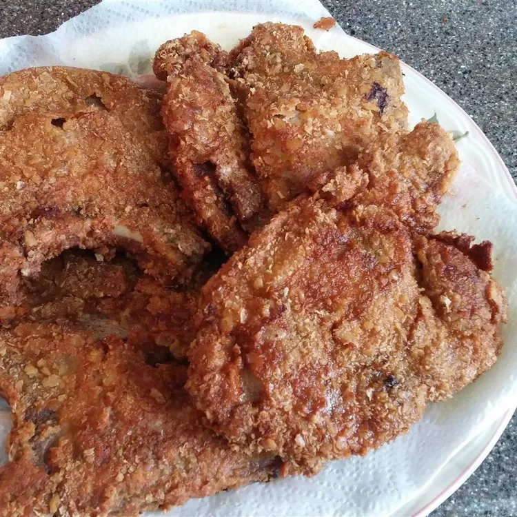

Home

Photo by Allrecipes Member
Description
This recipe is for the best chicken-fried pork chops you will ever eat. You can also try this with cube steak for chicken-fried steak, or with chicken breast!
Ingredients
- 2 cups all-purpose flour, divided
- 1.5 teaspoons ground paprika
- 1/2 teasponn garlic power
- 1/2 cup milk
- 2 eggs
- 1/2 (16 ounce)package saltine crackers, crushed into crumbs
- 1/2 cup dry potato flalkes
- 4(3/4-inch-thick) pork chops
- Salt and ground black pepper to taste
- 1.5 cups vegetable oil for frying
Steps
- Combine 1 ½ cups flour, paprika, and garlic powder in a shallow bowl. Whisk milk and eggs together in a second shallow bowl until thoroughly combined. Combine cracker crumbs, potato flakes, and remaining ½ cup flour in a third shallow bowl.
- Prick pork chops thoroughly with a fork to tenderize; season with salt and black pepper.
- Gently dredge pork chops in flour mixture to coat; shake off excess. Dip into egg mixture, then press into cracker crumb mixture. Gently toss between your hands to remove any crumbs that haven't stuck.
- Heat oil in a large, deep skillet over medium heat. Lower pork chops carefully into the hot oil; fry until no longer pink in centers and crusts are crisp and golden brown, about 5 minutes per side. Transfer to a paper towel-lined plate to drain.